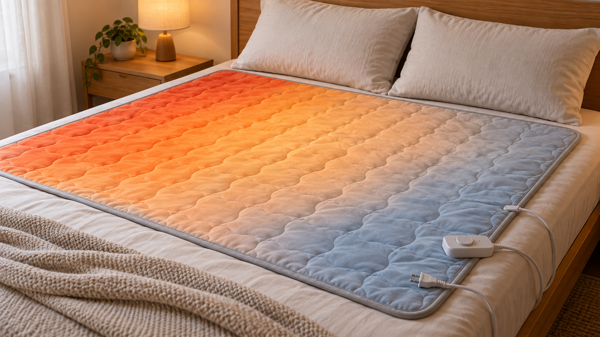

전기장판의 일부만 유난히 뜨겁거나 차갑다면 먼저 접힘·눌림·조절기 연결을 확인하세요. 특정 지점이 뜨거워지거나 변색·탄 냄새가 있으면 내부 열선 손상 가능성이 있으므로 즉시 사용을 중단해야 합니다.
| 상태 | 판단 |
|---|---|
| 가장자리만 약간 덜 따뜻함 | 제품 구조상 가능, 설명서 확인 |
| 접힌 부분만 과열 | 즉시 펴고 식힌 뒤 손상 확인 |
| 동전 크기 한 점이 매우 뜨거움 | 재사용 금지, 점검 필요 |
| 한 구역 전체가 차가움 | 연결 또는 열선 고장 가능 |
국소 과열, 반복적인 전원 차단, 조절기 오류, 변색이나 냄새가 있으면 모델명과 이상 위치를 기록해 제조사 점검을 받으세요. 전체가 따뜻하지 않은 경우에는 전기장판이 따뜻하지 않을 때 점검법도 참고하세요.
한국전기안전공사와 제품 사용설명서의 접힘·보관·세탁 주의사항을 따르세요.